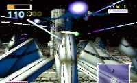

|


Review
Game Type: Chase-View Shooter
The worthy sequel to the SNES blockbuster. Steer your tiny starship
between skyscrapers, asteroids, and canyon walls while blasting
enemy ships. Some sequences place you in a tank which can jet sideways
or even hover. Supports up to four players simultaneously with
split-screen.
Gameplay: 90/100
The control is a bit looser than in the SNES version, so shooting
accurately will be a bit difficult at first even for veterans of the first
game. In time, though, it becomes easy enough, and the lock-on laser (a la
Panzer Dragoon) helps out. Even though analog control provides variable
turn speeds, you're still allowed to bank (R and Z buttons) for an
extra-quick dodge. You'll need it, too, because there will be buildings
falling on you, wayward space debris tumbling into your path, and much
more. Although some sequences let you turn freely, most of the time you
must move within a particular corridor, as in the first. New stunts like
the loop-de-loop will let you take on the occasional enemy which
approaches from behind. All these new tricks take time to master, even
for those who've played the first, but once you get the hang of it the game
is a blast. Even the hovertank sequences are fun.
Graphics: 90/100
Unfortunately there is the occasional bit of slowdown, but otherwise
the graphics are stellar. No really fancy effects, just appealing colors,
huge bosses that fill the screen, and lots of smoke and explosions.
Sound: 50/100
The semi-classical soundtrack is okay but nowhere near as inspired as
the first. The sound effects are decent. There are tons of voice samples,
and every radio communication is speech, not text. Too bad some of the
voice acting is nearly as awful as Resident Evil's.
Overall: 90/100
A highly playable and replayable game, just like the first, but with
up-to-date graphics. Rent an N64 and this game if you don't own one; it
may well convince you to purchase both.
Codes
- Move Title Screen Logo
- Simply wait for a moment at the title screen and then move the analog
stick. You'll be able to move the "64" around the screen, and the Star Fox
team will watch it as it moves.
- Train Against Star Wolf
- Get 100 kills in all-range mode during training and the Star Wolf team
will appear for you to fight against.
- Use Landmaster Tanks in Battle Mode
- Get 200 kills on Venom (hard route) to acquire a medal for the course.
You'll then be able to use Landmasters in Battle Mode.
- Expert Mode and Sound Test
- Get all 15 medals in the main game. (This requires a certain number of
kills for each course.)
- Fight on Foot in Battle Mode
- Get 200 kills on Venom (hard route) in expert mode to acquire another
medal. You can then fight as the Star Fox team members themselves.
|